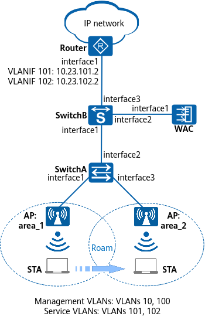

Example for Configuring Intra-WAC Layer 3 Roaming
Networking Requirements
Users access the network through WLANs, meeting the basic mobile office requirements. Furthermore, users' services are not affected during inter-VLAN roaming of STAs in the coverage area.
- WAC networking mode: Layer 3 off-path networking
- DHCP deployment:
- The WAC functions as a DHCP server to assign IP addresses to APs.
- SwitchB functions as a DHCP server to assign IP addresses to STAs.
- Service data forwarding mode: direct forwarding

In this example, interface1, interface2, and interface3 represent 10GE0/0/1, 10GE0/0/2, and 10GE0/0/3, respectively.
In this example, SwitchA and SwitchB use common campus switches, and the AP model is AirEngine 5776-26.

Item |
Data |
|---|---|
Management VLANs for APs |
VLAN 10 and VLAN 100 |
Service VLAN for STAs |
|
DHCP server |
The WAC functions as a DHCP server to assign IP addresses to APs. SwitchB functions as a DHCP server to assign IP addresses to STAs. The default gateway addresses for STAs are 10.23.101.2/24 and 10.23.102.2/24. |
IP address pool for APs |
10.23.10.2–10.23.10.254/24 |
IP address pool for STAs |
|
IP address of the WAC source interface |
VLANIF 100: 10.23.100.1/24 |
AP groups |
|
|
|
Regulatory domain profile |
|
SSID profile |
|
Security profile |
|
VAP profiles |
|
|
|
Air scan profile |
|
2.4 GHz radio profile |
|
5 GHz radio profile |
|
Precautions
- No ACK mechanism is available for multicast packet transmission over unstable wireless links of air interfaces. For this reason, multicast packets are usually sent at low rates to ensure stable transmission. However, if a large number of multicast packets are sent from the network side, air interfaces may be congested. Therefore, you are advised to configure multicast packet suppression to reduce the impact of numerous low-rate multicast packets on the wireless network. Exercise caution when configuring the rate limit if there are multicast services on the network, as this may affect the multicast services.
Configure multicast packet suppression on interfaces directly connecting the device to APs.
For details on how to configure traffic suppression, see How Do I Configure Multicast Packet Suppression to Reduce Impact of a Large Number of Low-Rate Multicast Packets on the Wireless Network?
- The port isolation configuration is recommended on the ports of the device directly connected to APs. If port isolation is not configured and direct forwarding is used, a large number of unnecessary broadcast packets may be generated in the VLAN, blocking the network and degrading user experience.
- The CAPWAP source interface or source address can be successfully configured only when all of the following security-related configurations exist: PSK for DTLS encryption, user name and password for logging in to an AP, and password for logging in to the global offline management VAP. If any of these configurations does not exist, the system prompts you to supplement related configurations first.
- If DTLS encryption for CAPWAP control tunnels is enabled, APs fail to go online after being imported. In this case, run the capwap dtls no-auth enable command to enable the function of establishing CAPWAP DTLS sessions in none authentication mode so that the APs can obtain security credentials. After the APs go online, run the undo capwap dtls no-auth enable command to disable this function promptly to prevent unauthorized APs from going online.
Configuration Roadmap
- Configure network connectivity between the WAC, APs, and other network devices.
- Configure APs to go online.
- Create an AP group and add APs that require the same configuration to the group for unified configuration.
- Configure WAC system parameters, including the country code and the WAC source interface for communication with the APs.
- Configure the AP authentication mode and import APs so that they can go online normally.
- Configure WLAN service parameters so that STAs can access the WLAN.
During AP deployment, you can manually specify the working channels of the APs according to network planning or configure the radio calibration function to enable the APs to automatically select the optimal channels. This example uses the radio calibration configuration.
Procedure
- Configure the network devices.# On SwitchA, add 10GE0/0/1 to VLANs 10 and 101, 10GE0/0/2 to VLANs 10, 101, and 102, and 10GE0/0/3 to VLANs 10 and 102. Set the PVIDs of 10GE0/0/1 and 10GE0/0/3 both to VLAN 10.
<HUAWEI> system-view [HUAWEI] sysname SwitchA [SwitchA] vlan batch 10 101 102 [SwitchA] interface 10ge 0/0/1 [SwitchA-10GE0/0/1] portswitch [SwitchA-10GE0/0/1] port link-type trunk [SwitchA-10GE0/0/1] port trunk pvid vlan 10 [SwitchA-10GE0/0/1] port trunk allow-pass vlan 10 101 [SwitchA-10GE0/0/1] port-isolate enable group 1 [SwitchA-10GE0/0/1] quit [SwitchA] interface 10ge 0/0/2 [SwitchA-10GE0/0/2] portswitch [SwitchA-10GE0/0/2] port link-type trunk [SwitchA-10GE0/0/2] port trunk allow-pass vlan 10 101 102 [SwitchA-10GE0/0/2] quit [SwitchA] interface 10ge 0/0/3 [SwitchA-10GE0/0/3] portswitch [SwitchA-10GE0/0/3] port link-type trunk [SwitchA-10GE0/0/3] port trunk pvid vlan 10 [SwitchA-10GE0/0/3] port trunk allow-pass vlan 10 102 [SwitchA-10GE0/0/3] port-isolate enable group 1 [SwitchA-10GE0/0/3] quit
# On SwitchB, add 10GE0/0/1 to VLANs 10, 101, and 102, 10GE0/0/2 to VLAN 100, and 10GE0/0/3 to VLANs 101 and 102. Create VLANIF 100 and set its IP address to 10.23.100.2/24.<HUAWEI> system-view [HUAWEI] sysname SwitchB [SwitchB] vlan batch 10 100 101 102 [SwitchB] interface 10ge 0/0/1 [SwitchB-10GE0/0/1] portswitch [SwitchB-10GE0/0/1] port link-type trunk [SwitchB-10GE0/0/1] port trunk allow-pass vlan 10 101 102 [SwitchB-10GE0/0/1] quit [SwitchB] interface 10ge 0/0/2 [SwitchB-10GE0/0/2] portswitch [SwitchB-10GE0/0/2] port link-type trunk [SwitchB-10GE0/0/2] port trunk allow-pass vlan 100 [SwitchB-10GE0/0/2] quit [SwitchB] interface 10ge 0/0/3 [SwitchB-10GE0/0/3] portswitch [SwitchB-10GE0/0/3] port link-type trunk [SwitchB-10GE0/0/3] port trunk allow-pass vlan 101 102 [SwitchB-10GE0/0/3] quit [SwitchB] interface vlanif 100 [SwitchB-Vlanif100] ip address 10.23.100.2 24 [SwitchB-Vlanif100] quit
# On Router, add 10GE0/0/1 to VLAN 101 and VLAN 102, create VLANIF 101 and VLANIF 102, and assign IP addresses 10.23.101.2/24 and 10.23.102.2/24 to VLANIF 101 and VLANIF 102, respectively.<HUAWEI> system-view [HUAWEI] sysname Router [Router] vlan batch 101 102 [Router] interface 10ge 0/0/1 [Router-10GE0/0/1] portswitch [Router-10GE0/0/1] port link-type trunk [Router-10GE0/0/1] port trunk allow-pass vlan 101 102 [Router-10GE0/0/1] quit [Router] interface vlanif 101 [Router-Vlanif101] ip address 10.23.101.2 24 [Router-Vlanif101] quit [Router] interface vlanif 102 [Router-Vlanif102] ip address 10.23.102.2 24 [Router-Vlanif102] quit
- Configure the WAC to communicate with other network devices.# Add 10GE0/0/1 on the WAC to VLAN 100 and create VLANIF 100.
<HUAWEI> system-view [HUAWEI] sysname WAC [WAC] vlan 100 [WAC-vlan100] quit [WAC] interface vlanif 100 [WAC-Vlanif100] ip address 10.23.100.1 24 [WAC-Vlanif100] quit [WAC] interface 10ge 0/0/1 [WAC-10GE0/0/1] portswitch [WAC-10GE0/0/1] port link-type trunk [WAC-10GE0/0/1] port trunk allow-pass vlan 100 [WAC-10GE0/0/1] quit
# Configure a route from the WAC to the APs, with the next hop being VLANIF 100 on SwitchB.[WAC] ip route-static 10.23.10.0 24 10.23.100.2
- Configure the DHCP servers to assign IP addresses to APs and STAs.# Configure the DHCP relay function on SwitchB to forward DHCP packets between the WAC and APs.
[SwitchB] dhcp enable [SwitchB] interface vlanif 10 [SwitchB-Vlanif10] ip address 10.23.10.1 24 [SwitchB-Vlanif10] dhcp select relay [SwitchB-Vlanif10] dhcp relay server-ip 10.23.100.1 [SwitchB-Vlanif10] quit
# On SwitchB, configure VLANIF 101 and VLANIF 102 to assign IP addresses to STAs and specify the default gateways. Configure the DNS server as required. The common methods are as follows:- In the interface address pool scenario, run the dhcp server dns-list ip-address &<1-8> command in the VLANIF interface view.
- In the global address pool scenario, run the dns-list ip-address &<1-8> command in the IP address pool view.
[SwitchB] interface vlanif 101 [SwitchB-Vlanif101] ip address 10.23.101.1 24 [SwitchB-Vlanif101] dhcp select interface [SwitchB-Vlanif101] dhcp server gateway-list 10.23.101.2 [SwitchB-Vlanif101] quit [SwitchB] interface vlanif 102 [SwitchB-Vlanif102] ip address 10.23.102.1 24 [SwitchB-Vlanif102] dhcp select interface [SwitchB-Vlanif102] dhcp server gateway-list 10.23.102.2 [SwitchB-Vlanif102] quit
# On the WAC, create a global IP address pool to assign IP addresses to APs.[WAC] dhcp enable [WAC] ip pool huawei [WAC-ip-pool-huawei] network 10.23.10.0 mask 24 [WAC-ip-pool-huawei] gateway-list 10.23.10.1 [WAC-ip-pool-huawei] option 43 sub-option 3 ascii 10.23.100.1 [WAC-ip-pool-huawei] quit [WAC] interface vlanif 100 [WAC-Vlanif100] dhcp select global [WAC-Vlanif100] quit
- Configure the APs to go online.# Create an AP group to which APs requiring the same configuration can be added.
[WAC] wlan [WAC-wlan] ap-group name ap-group1 [WAC-wlan-ap-group-ap-group1] quit [WAC-wlan] ap-group name ap-group2 [WAC-wlan-ap-group-ap-group2] quit
# Create a regulatory domain profile, configure the WAC country code in the profile, and bind the profile to the AP group.[WAC-wlan] regulatory-domain-profile name default [WAC-wlan-regulate-domain-default] country-code cn Warning: Modifying the country code will clear the channel and power configurations of radios, and requires the APs to be restarted if they run V200R019C10 or earlier. Continue? [Y/N]:y [WAC-wlan-regulate-domain-default] quit [WAC-wlan] ap-group name ap-group1 [WAC-wlan-ap-group-ap-group1] regulatory-domain-profile default Warning: This configuration change will clear the channel and power configurations of radios, and may restart APs. Continue?[Y/N]:y [WAC-wlan-ap-group-ap-group1] quit [WAC-wlan] ap-group name ap-group2 [WAC-wlan-ap-group-ap-group2] regulatory-domain-profile default Warning: This configuration change will clear the channel and power configurations of radios, and may restart APs. Continue?[Y/N]:y [WAC-wlan-ap-group-ap-group2] quit [WAC-wlan] quit
# Configure the WAC source interface. The CAPWAP source interface or source address can be successfully configured only when all of the following security-related configurations exist: PSK for DTLS encryption, user name and password for logging in to an AP, and password for logging in to the global offline management VAP. If any of these configurations does not exist, the system prompts you to supplement related configurations first.
[WAC] capwap source interface vlanif 100 Set the DTLS PSK(contains 8-32 plain-text characters, or 128 or 148 cipher-text characters that must be a combination of at least tw o of the following: lowercase letters a to z, uppercase letters A to Z, digits, and special characters):******** Confirm PSK:******** Set the user name for FIT APs(The value is a string of 4 to 31 characters, which can contain letters, underscores, and digits, and m ust start with a letter):******** Set the password for FIT APs(plain-text password of 8-128 characters or cipher-text password of 128-268 characters that must be a co mbination of at least three of the following: lowercase letters a to z, uppercase letters A to Z, digits, and special characters):****** Confirm password:******** Set the PSK of the global offline management VAP(plain-text password of 8-63 characters or cipher-text password of 128-188 character s that must be a combination of at least two of the following: lowercase letters a to z, uppercase letters A to Z, digits, and speci al characters):******** Confirm PSK:********
# Import APs on the WAC and add APs area_1 and area_2 to AP groups ap-group1 and ap-group2, respectively. Assume that the AP's MAC address is 00e0-fc76-e360 (if the MAC address obtained is in the format of 00e0fc76e360, use the format of 00e0-fc76-e360 in the configuration). Configure a name for the AP based on the AP's deployment location, so that the AP can be easily located based on its name. For example, if the AP with MAC address 00e0-fc76-e360 is in area 1, name it area_1. The default AP authentication mode is MAC address authentication. If the default setting has not been changed, you do not need to run the ap auth-mode mac-auth command.
[WAC] wlan [WAC-wlan] ap auth-mode mac-auth [WAC-wlan] ap-id 1 ap-mac 00e0-fc76-e360 [WAC-wlan-ap-1] ap-name area_1 [WAC-wlan-ap-1] ap-group ap-group1 Warning: This operation may cause AP to go offline and then online. If the country code changes, it will clear channel, power and antenna gain configurations of the radio, Whether to continue? [Y/N]:y [WAC-wlan-ap-1] quit
[WAC-wlan] ap-id 2 ap-mac 00e0-fc04-b500 [WAC-wlan-ap-2] ap-name area_2 [WAC-wlan-ap-2] ap-group ap-group2 Warning: This operation may cause AP to go offline and then online. If the country code changes, it will clear channel, power and antenna gain configurations of the radio, Whether to continue? [Y/N]:y [WAC-wlan-ap-2] quit
# Power on the AP and run the display ap all command to check the AP state. If the State field is displayed as nor, the AP goes online successfully.[WAC-wlan] display ap all Total AP information: nor : normal [2] Extrainfo : Extra information Total: 2 ----------------------------------------------------------------------------------------------------------------------- ID MAC Name Group IP Type State STA Uptime ExtraInfo ----------------------------------------------------------------------------------------------------------------------- 1 00e0-fc76-e360 area_1 ap-group1 10.23.10.254 AirEngine5776-26 nor 0 3D:18H:37M:13S - 2 00e0-fc04-b500 area_2 ap-group2 10.23.10.253 AirEngine5776-26 nor 0 3D:18H:37M:13S - -----------------------------------------------------------------------------------------------------------------------
- Configure WLAN service parameters.# Create the security profile wlan-net and configure a security policy in the profile.
In this example, the security policy is set to WPA-WPA2+PSK+AES and the password to YsHsjx_202206. In actual situations, configure the security policy based on service requirements.
[WAC-wlan] security-profile name wlan-net [WAC-wlan-sec-prof-wlan-net] security wpa-wpa2 psk pass-phrase YsHsjx_202206 aes [WAC-wlan-sec-prof-wlan-net] quit# Create the SSID profile wlan-net and set the SSID name to wlan-net.[WAC-wlan] ssid-profile name wlan-net [WAC-wlan-ssid-prof-wlan-net] ssid wlan-net [WAC-wlan-ssid-prof-wlan-net] quit
# Create VAP profiles wlan-net1 and wlan-net2, set the data forwarding mode and service VLANs, and bind the security profile and SSID profile to the VAP profiles.[WAC-wlan] vap-profile name wlan-net1 [WAC-wlan-vap-prof-wlan-net1] service-vlan vlan-id 101 [WAC-wlan-vap-prof-wlan-net1] security-profile wlan-net [WAC-wlan-vap-prof-wlan-net1] ssid-profile wlan-net [WAC-wlan-vap-prof-wlan-net1] quit [WAC-wlan] vap-profile name wlan-net2 [WAC-wlan-vap-prof-wlan-net2] service-vlan vlan-id 102 [WAC-wlan-vap-prof-wlan-net2] security-profile wlan-net [WAC-wlan-vap-prof-wlan-net2] ssid-profile wlan-net [WAC-wlan-vap-prof-wlan-net2] quit
# Bind the VAP profiles to the AP groups so that the VAP profiles wlan-net1 and wlan-net2 take effect on radios 0 and 1 of the APs area_1 and area_2, respectively.[WAC-wlan] ap-group name ap-group1 [WAC-wlan-ap-group-ap-group1] vap-profile wlan-net1 wlan 1 radio 0 [WAC-wlan-ap-group-ap-group1] vap-profile wlan-net1 wlan 1 radio 1 [WAC-wlan-ap-group-ap-group1] quit [WAC-wlan] ap-group name ap-group2 [WAC-wlan-ap-group-ap-group2] vap-profile wlan-net2 wlan 1 radio 0 [WAC-wlan-ap-group-ap-group2] vap-profile wlan-net2 wlan 1 radio 1 [WAC-wlan-ap-group-ap-group2] quit
- Enable radio calibration to allow APs to automatically select the optimal channels and power.# Enable automatic channel and power calibration functions of the radio.
[WAC-wlan] ap-group name ap-group1 [WAC-wlan-ap-group-ap-group1] radio 0 [WAC-wlan-ap-group-ap-group1-radio-0] calibrate auto-channel-select enable [WAC-wlan-ap-group-ap-group1-radio-0] calibrate auto-txpower-select enable [WAC-wlan-ap-group-ap-group1-radio-0] quit [WAC-wlan-ap-group-ap-group1] radio 1 [WAC-wlan-ap-group-ap-group1-radio-1] calibrate auto-channel-select enable [WAC-wlan-ap-group-ap-group1-radio-1] calibrate auto-txpower-select enable [WAC-wlan-ap-group-ap-group1-radio-1] quit [WAC-wlan-ap-group-ap-group1] quit [WAC-wlan] ap-group name ap-group2 [WAC-wlan-ap-group-ap-group2] radio 0 [WAC-wlan-ap-group-ap-group2-radio-0] calibrate auto-channel-select enable [WAC-wlan-ap-group-ap-group2-radio-0] calibrate auto-txpower-select enable [WAC-wlan-ap-group-ap-group2-radio-0] quit [WAC-wlan-ap-group-ap-group2] radio 1 [WAC-wlan-ap-group-ap-group2-radio-1] calibrate auto-channel-select enable [WAC-wlan-ap-group-ap-group2-radio-1] calibrate auto-txpower-select enable [WAC-wlan-ap-group-ap-group2-radio-1] quit [WAC-wlan-ap-group-ap-group2] quit
# Configure the calibration channel sets in a regulatory domain profile.[WAC-wlan] regulatory-domain-profile name default [WAC-wlan-regulate-domain-default] dca-channel 2.4g channel-set 1,6,11 [WAC-wlan-regulate-domain-default] dca-channel 5g bandwidth 20mhz [WAC-wlan-regulate-domain-default] dca-channel 5g channel-set 149,153,157,161 [WAC-wlan-regulate-domain-default] quit
# Create the air scan profile wlan-airscan and configure the scan channel set, scan interval, and scan period.
[WAC-wlan] air-scan-profile name wlan-airscan [WAC-wlan-air-scan-prof-wlan-airscan] scan-channel-set dca-channel [WAC-wlan-air-scan-prof-wlan-airscan] scan-period 60 [WAC-wlan-air-scan-prof-wlan-airscan] scan-interval 10000 [WAC-wlan-air-scan-prof-wlan-airscan] quit
# Create the 2.4 GHz radio profile wlan-radio2g and bind the air scan profile wlan-airscan to the 2.4 GHz radio profile.
[WAC-wlan] radio-2g-profile name wlan-radio2g [WAC-wlan-radio-2g-prof-wlan-radio2g] air-scan-profile wlan-airscan [WAC-wlan-radio-2g-prof-wlan-radio2g] quit
# Create the 5 GHz radio profile wlan-radio5g and bind the air scan profile wlan-airscan to the 5 GHz radio profile.
[WAC-wlan] radio-5g-profile name wlan-radio5g [WAC-wlan-radio-5g-prof-wlan-radio5g] air-scan-profile wlan-airscan [WAC-wlan-radio-5g-prof-wlan-radio5g] quit
# Bind the 5 GHz radio profile wlan-radio5g and 2.4 GHz radio profile wlan-radio2g both to the AP groups ap-group1 and ap-group2.
[WAC-wlan] ap-group name ap-group1 [WAC-wlan-ap-group-ap-group1] radio-5g-profile wlan-radio5g radio 1 Warning: This action may cause service interruption. Continue?[Y/N]y [WAC-wlan-ap-group-ap-group1] radio-2g-profile wlan-radio2g radio 0 Warning: This action may cause service interruption. Continue?[Y/N]y [WAC-wlan-ap-group-ap-group1] quit [WAC-wlan] ap-group name ap-group2 [WAC-wlan-ap-group-ap-group2] radio-5g-profile wlan-radio5g radio 1 Warning: This action may cause service interruption. Continue?[Y/N]y [WAC-wlan-ap-group-ap-group2] radio-2g-profile wlan-radio2g radio 0 Warning: This action may cause service interruption. Continue?[Y/N]y [WAC-wlan-ap-group-ap-group2] quit
# Set the radio calibration mode to manual and then trigger radio calibration.
[WAC-wlan] calibrate enable manual [WAC-wlan] calibrate manual startup
# Radio calibration stops 1 hour after being manually triggered. Set the radio calibration mode to scheduled. Configure the APs to perform radio calibration in off-peak hours, for example, between 00:00 am and 06:00 am.[WAC-wlan] calibrate enable schedule time 03:00:00
Verifying the Configuration
# The WLAN service configuration is automatically delivered to the APs. After the service configuration is complete, run the display vap ssid wlan-net command to check VAP profile information. If Status in the command output is displayed as ON, the VAPs have been successfully created for the corresponding AP radios.
[WAC-wlan] display vap ssid wlan-net Info: This operation may take a few seconds, please wait. WID : WLAN ID Total: 4 ------------------------------------------------------------------------------------------ AP ID AP name RfID WID BSSID Status Auth type STA SSID Radio Type ------------------------------------------------------------------------------------------ 0 area_1 0 1 00E0-FC76-E360 ON WPA/WPA2-PSK 0 wlan-net 11be 0 area_1 1 1 00E0-FC76-E370 ON WPA/WPA2-PSK 0 wlan-net 11be 1 area_2 0 1 00E0-FC74-9640 ON WPA/WPA2-PSK 0 wlan-net 11be 1 area_2 1 1 00E0-FC74-9650 ON WPA/WPA2-PSK 0 wlan-net 11be -----------------------------------------------------------------------------------------
# Connect a STA to the WLAN with SSID wlan-net and enter the password YsHsjx_202206. Run the display station ssid wlan-net command on the WAC. The command output shows that the STA is connected to the WLAN wlan-net.
[WAC-wlan] display station ssid wlan-net
Rf/WLAN: Radio ID/WLAN ID
Rx/Tx: link receive rate/link transmit rate(Mbps)
Total: 1 2.4G: 0 5G: 1 6G: 0
-----------------------------------------------------------------------------------------------------------------------
STA MAC AP ID Ap name Rf/WLAN Band Type Rx/Tx RSSI VLAN IP address SSID
-----------------------------------------------------------------------------------------------------------------------
00e0-fcc7-1e08 0 area_1 1/1 5G 11n 46/59 -68 101 10.23.101.254 wlan-net
-----------------------------------------------------------------------------------------------------------------------
[WAC-wlan] display station ssid wlan-net
Rf/WLAN: Radio ID/WLAN ID
Rx/Tx: link receive rate/link transmit rate(Mbps)
Total: 1 2.4G: 0 5G: 1 6G: 0
-----------------------------------------------------------------------------------------------------------------------
STA MAC AP ID Ap name Rf/WLAN Band Type Rx/Tx RSSI VLAN IP address SSID
-----------------------------------------------------------------------------------------------------------------------
00e0-fcc7-1e08 1 area_2 1/1 5G 11n 46/59 -58 101 10.23.101.254 wlan-net
-----------------------------------------------------------------------------------------------------------------------
[WAC-wlan] display station roam-track sta-mac 00e0-fcc7-1e08 Access SSID:test Rx/Tx:link receive rate/link transmit rate(Mbps) Packet Delay: Packet delay rate(ms) Packet Loss: Packet Loss rate(percentage) s: Same Frequency Network c:PMK Cache Roam r:802.11r Roam d:802.11r over ds Roam p:proprietary 802.11r Roam Number: 1 ------------------------------------------------------------------------------------------------------------------------- L2/L3 AP-AC IP AC-AC IP AP name/ID In/out Packet Delay Radio ID BSSID TIME In/Out RSSI Out Rx/Tx In/out Packet Loss ------------------------------------------------------------------------------------------------------------------------- -- 10.23.100.1 - area_1/1 20/50 1 00e0-fc76-e370 2025-01-12/16:52:58 -51/-48 46/13 0/5 L3 10.23.100.1 - area_2/2 20/- 1 00e0-fc74-9650 2025-01-12/16:55:45 -58/- -/- -/- -------------------------------------------------------------------------------------------------------------------------
Configuration Scripts
SwitchA
# sysname SwitchA # vlan batch 10 101 to 102 # interface 10GE0/0/1 portswitch port link-type trunk port trunk pvid vlan 10 port trunk allow-pass vlan 10 101 port-isolate enable group 1 # interface 10GE0/0/2 portswitch port link-type trunk port trunk allow-pass vlan 10 101 to 102 # interface 10GE0/0/3 portswitch port link-type trunk port trunk pvid vlan 10 port trunk allow-pass vlan 10 102 port-isolate enable group 1 # return
SwitchB
# sysname SwitchB # vlan batch 10 100 to 102 # dhcp enable # interface Vlanif10 ip address 10.23.10.1 255.255.255.0 dhcp select relay dhcp relay server-ip 10.23.100.1 # interface Vlanif100 ip address 10.23.100.2 255.255.255.0 # interface Vlanif101 ip address 10.23.101.1 255.255.255.0 dhcp select interface dhcp server gateway-list 10.23.101.2 # interface Vlanif102 ip address 10.23.102.1 255.255.255.0 dhcp select interface dhcp server gateway-list 10.23.102.2 # interface 10GE0/0/1 portswitch port link-type trunk port trunk allow-pass vlan 10 101 to 102 # interface 10GE0/0/2 portswitch port link-type trunk port trunk allow-pass vlan 100 # interface 10GE0/0/3 portswitch port link-type trunk port trunk allow-pass vlan 101 to 102 # return
Router
# sysname Router # vlan batch 101 to 102 # interface Vlanif101 ip address 10.23.101.2 255.255.255.0 # interface Vlanif102 ip address 10.23.102.2 255.255.255.0 # interface 10GE0/0/1 portswitch port link-type trunk port trunk allow-pass vlan 101 to 102 # return
- WAC
# sysname WAC # vlan batch 100 to 102 # dhcp enable # ip pool huawei gateway-list 10.23.10.1 network 10.23.10.0 mask 255.255.255.0 option 43 sub-option 3 ascii 10.23.100.1 # interface Vlanif100 ip address 10.23.100.1 255.255.255.0 dhcp select global # interface 10GE0/0/1 portswitch port link-type trunk port trunk allow-pass vlan 100 # ip route-static 10.23.10.0 24 10.23.100.2 # capwap source interface vlanif 100 # wlan calibrate enable schedule time 03:00:00 security-profile name wlan-net security wpa-wpa2 psk pass-phrase %+%##!!!!!!!!!"!!!!#!!!!*!!!!&/WY/186Z1x8#PU@C;&P1'\WPRQ_!,;P$fL!!!!!2jp5!!!!!!>!!!!Mp/;$ov&i4H!xC;y!si7-KcJN+6AvHQ1}G<u1-`F%+%# aes ssid-profile name wlan-net ssid wlan-net vap-profile name wlan-net1 service-vlan vlan-id 101 ssid-profile wlan-net security-profile wlan-net vap-profile name wlan-net2 service-vlan vlan-id 102 ssid-profile wlan-net security-profile wlan-net regulatory-domain-profile name default dca-channel 5g channel-set 149,153,157,161 air-scan-profile name wlan-airscan scan-channel-set dca-channel radio-2g-profile name wlan-radio2g air-scan-profile wlan-airscan radio-5g-profile name wlan-radio5g air-scan-profile wlan-airscan ap-group name ap-group1 radio 0 radio-2g-profile wlan-radio2g vap-profile wlan-net1 wlan 1 radio 1 radio-5g-profile wlan-radio5g vap-profile wlan-net1 wlan 1 ap-group name ap-group2 radio 0 radio-2g-profile wlan-radio2g vap-profile wlan-net2 wlan 1 radio 1 radio-5g-profile wlan-radio5g vap-profile wlan-net2 wlan 1 ap-id 1 type-id 216 ap-mac 00e0-fc76-e360 ap-sn 210235554710CB000042 ap-name area_1 ap-group ap-group1 ap-id 2 type-id 216 ap-mac 00e0-fc04-b500 ap-sn 210235554710CB000078 ap-name area_2 ap-group ap-group2 # return